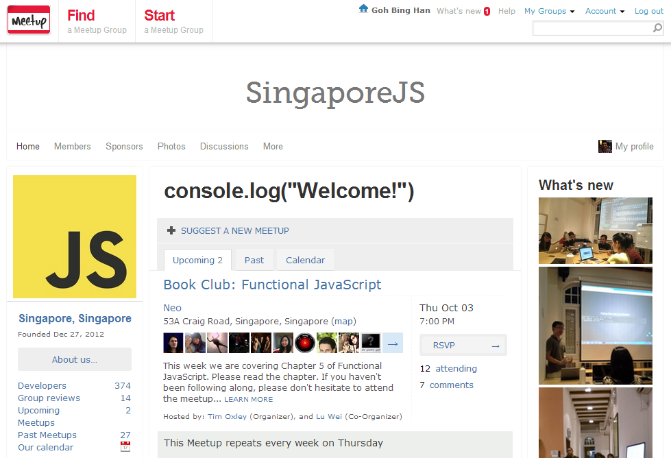

Functional JS Workshop
A hands-on intro Workshop
by Bing Han / @stiucsib86
*Highly* Recommended Reading

Get it from Amazon
or... from me (*ssshhh...*)
*highly* Recommended Meetup Group - Singapore JS

http://www.meetup.com/Singapore-JS/
Every Thursday night.
In JS, functions are first class objects
- can store the function in a variable
- can pass the function as a parameter to another function
- can and return function
- ...just like any other variable
can store the function in a variable
var myObj = {
first: function() {
return 'YAY';
}
};
can pass the function as a parameter to another function
var myObj = {
first: function() {
return 'YAY';
}
};
var fn2 = function(fn) {
console.log(fn());
};
fn2(myObj.first);
>> YAY
can and return function
var myObj = {
myDiv: function(div) {
return function(num) {
return num/div;
};
}
};
var divisionBy10 = myObj.myDiv(10);
divisionBy10(1000);
>> 100
Array.prototype.map()
https://developer.mozilla.org/en-US/docs/Web/JavaScript/Reference/Global_Objects/Array/mapCreates a new array with the results of calling a provided function on every element in this array.
array.map(callback)
Array.prototype.map()
https://developer.mozilla.org/en-US/docs/Web/JavaScript/Reference/Global_Objects/Array/map
Question: Find the square root of these numbers...
var numbers = [1, 4, 9];
Array.prototype.map()
https://developer.mozilla.org/en-US/docs/Web/JavaScript/Reference/Global_Objects/Array/map
[1, 4, 9].map(Math.sqrt);
/* or... */
var numbers = [1, 4, 9];
var roots = numbers.map(Math.sqrt);
/* roots is now [1, 2, 3], numbers is still [1, 4, 9] */
Array.prototype.reduce()
https://developer.mozilla.org/en-US/docs/Web/JavaScript/Reference/Global_Objects/Array/ReduceApply a function against an accumulator and each value of the array (from left-to-right) as to reduce it to a single value.
array.reduce(callback[, initialValue])
Array.prototype.reduce()
https://developer.mozilla.org/en-US/docs/Web/JavaScript/Reference/Global_Objects/Array/Reduce
var initialValue = 10;
[0, 1, 2, 3].reduce(function(a, b) {
return a + b;
}, initialValue);
// 6
[[0, 1], [2, 3], [4, 5]].reduce(function(a, b) {
return a.concat(b);
}, []);
// [0, 1, 2, 3, 4, 5]
Array.prototype.reduce()
https://developer.mozilla.org/en-US/docs/Web/JavaScript/Reference/Global_Objects/Array/Reduce
[0,1,2,3,4].reduce(function(previousValue, currentValue, index, array){
return previousValue + currentValue;
});
[0,1,2,3,4].reduce(function(collection, currentValue, index, array){
return collection.concat(currentValue);
}, []);
Array.prototype.filter()
https://developer.mozilla.org/en-US/docs/Web/JavaScript/Reference/Global_Objects/Array/filterCreates a new array with all elements that pass the test implemented by the provided function.
Array.prototype.filter()
https://developer.mozilla.org/en-US/docs/Web/JavaScript/Reference/Global_Objects/Array/filter
function isBigEnough(element) {
return element >= 10;
}
var filtered = [12, 5, 8, 130, 44].filter(isBigEnough);
// filtered is [12, 130, 44]
Array.prototype.filter()
https://developer.mozilla.org/en-US/docs/Web/JavaScript/Reference/Global_Objects/Array/filter
var filtered = [12, 5, 8, 130, 44].filter(function(element) {
return element >= 10;
});
// filtered is [12, 130, 44]
Function.prototype.call()
https://developer.mozilla.org/en-US/docs/Web/JavaScript/Reference/Global_Objects/Function/callCalls a function with a given this value and arguments provided individually.
fun.call(thisArg[, arg1[, arg2[, ...]]])
Function.prototype.call()
https://developer.mozilla.org/en-US/docs/Web/JavaScript/Reference/Global_Objects/Function/call
/* Recall Array.prototype.map */
/* [1, 4, 9].map(Math.sqrt); */
var numbers = [1,4,9];
Array.prototype.map.call(numbers, Math.sqrt);
Function.prototype.apply()
https://developer.mozilla.org/en-US/docs/Web/JavaScript/Reference/Global_Objects/Function/applyCalls a function with a given this value and arguments provided as an array (or an array-like object).
fun.apply(thisArg[, argsArray])
Function.prototype.apply()
https://developer.mozilla.org/en-US/docs/Web/JavaScript/Reference/Global_Objects/Function/apply
/* Recall Array.prototype.map */
/* [1, 4, 9].map(Math.sqrt); */
var numbers = [1,4,9];
Array.prototype.map.apply( /*** Whats here? ***/ );
Function.prototype.apply()
https://developer.mozilla.org/en-US/docs/Web/JavaScript/Reference/Global_Objects/Function/apply
/* Recall Array.prototype.map */
/* [1, 4, 9].map(Math.sqrt); */
var numbers = [1,4,9];
Array.prototype.map.apply(numbers, [Math.sqrt]);
Hands-on
- Install Node.js (http://nodejs.org/)
npm install -g functional-javascript-workshop@latest- run:
functional-javascript-workshop

Hands-on
- To print these instructions again, run:
functional-javascript print. - To execute your program in a test environment, run:
functional-javascript run program.js. - To verify your program, run:
functional-javascript verify program.js.